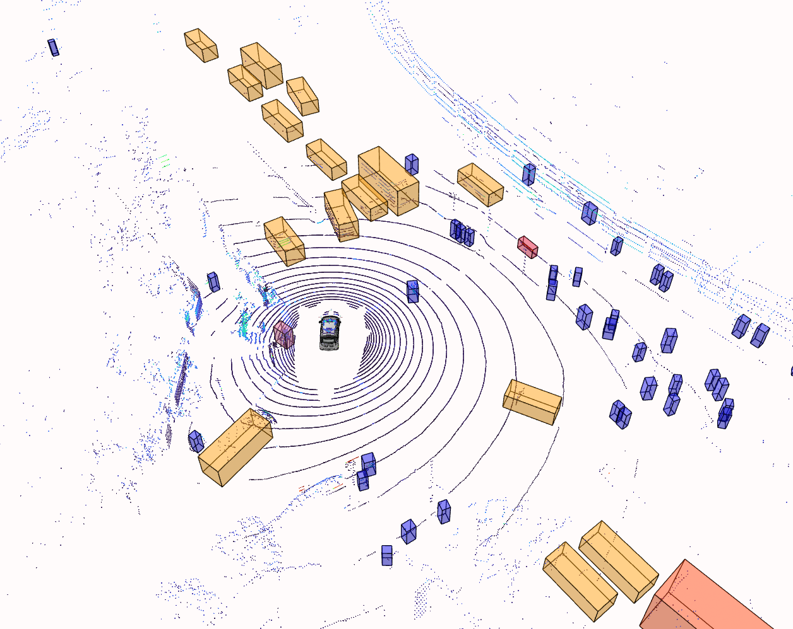

Introduction
Perception is one of the most critical modules in autonomous vehicles, responsible for path planning within drivable areas to guide the vehicle safely. However, as the vehicle moves, the conditions in drivable areas can change rapidly. Frequent path replanning alone cannot ensure high-speed driving stability, making lane markings a key element in maintaining a steady course. Segmenting drivable areas, detecting lane lines, and identifying traffic objects are fundamental perception tasks. However, executing these three vision-based tasks simultaneously demands significant computational resources, posing a challenge to the limited memory and processing power available in autonomous vehicles. A multitask perception algorithm can address this issue by efficiently allocating computational resources without compromising detection accuracy.
Given that autonomous vehicles operate in complex and dynamic environments, they are often affected by adverse weather, low light conditions at night, and occlusion of objects, all of which pose serious threats to safe driving. To tackle these challenges, we propose VisionNaviPro, an advanced visual perception model for autonomous driving. This project aims to deliver high-precision perception and localization services by integrating pure visual perception, large language model analysis, and semantic localization technologies. Key techniques such as multitask learning, cross-modal attention mechanisms, and multi-scale deformable attention modules are employed to significantly enhance the system's efficiency and accuracy, while maintaining high detection precision even under constrained computational resources.
VisionNaviPro provides robust technical support for vehicle-road collaboration, vehicle-to-everything (V2X) networks, and autonomous driving perception systems. Through the visual perception module, autonomous vehicles can accurately identify and locate various objects on the road, including lane lines, traffic signs, and other traffic participants. The inclusion of the semantic localization module enables the system to better understand user commands and make precise decisions and localization accordingly.
The proposed method has demonstrated excellent experimental results on challenging autonomous driving datasets such as nuScenes, Talk2Car, Argoverse, and BDD100K, proving the effectiveness of the network architecture. Specifically, the object detection module achieved a 12% increase in accuracy and a 10.2% reduction in parameters compared to state-of-the-art (SOTA) models. The semantic localization module reached a detection score of 72.7, improving accuracy by 13.8% over SOTA models. Experiments on the BDD100K dataset showed a 7.9% and 3.6% improvement in average precision for lane detection and object detection, respectively, compared to existing SOTA models.
Detailed Information
1. Vision Perception Module: The Vision Perception Module in VisionNaviPro is designed to handle the crucial tasks of visual recognition in autonomous driving, including object detection, drivable area segmentation, and lane detection. The module is built on a CSP-Darknet architecture which serves as the backbone for feature extraction, allowing the system to efficiently process input images. The extracted features are then fed into multiple decoders, each tailored for a specific visual task:
- Object Detection Decoder: Utilizes a multi-scale feature pyramid network (FPN) to detect and classify objects such as vehicles, pedestrians, and traffic signs. The design includes RoI pooling and refined anchor box generation to enhance detection accuracy.
- Drivable Area and Lane Detection Decoders: These decoders are based on semantic segmentation principles, employing bilinear interpolation to upsample feature maps back to the original image resolution. This allows for pixel-level classification, determining whether areas are drivable or belong to lane markings.
2. Large Language Model Analysis Module: This module leverages a fine-tuned large language model (based on LLama-7B) to provide deep semantic analysis and risk assessment in autonomous driving. The integration of this module enables the system to understand complex textual descriptions, such as traffic signs, road conditions, and emergency alerts. The language model can interpret and analyze these descriptions in real-time, offering a higher level of contextual awareness that enhances the vehicle's decision-making capabilities. This module is crucial for processing natural language commands and generating detailed risk assessments, helping the vehicle anticipate and respond to potential hazards more effectively.
3. Semantic Localization Module: This module leverages a fine-tuned large language model (based on LLama-7B) to provide deep semantic analysis and risk assessment in autonomous driving. The integration of this module enables the system to understand complex textual descriptions, such as traffic signs, road conditions, and emergency alerts. The language model can interpret and analyze these descriptions in real-time, offering a higher level of contextual awareness that enhances the vehicle's decision-making capabilities. This module is crucial for processing natural language commands and generating detailed risk assessments, helping the vehicle anticipate and respond to potential hazards more effectively.
Project Achievements
The VisionNaviPro project has achieved significant advancements in the domain of autonomous driving, particularly through its innovative approaches in visual perception, large language model analysis, and semantic localization. Here's a detailed summary of the project's achievements, focusing on experimental results, improvements, and the unique features of the system:
1. Enhanced Accuracy and Efficiency in Visual PerceptionVisionNaviPro employs a multitask learning framework combined with cross-modal attention mechanisms and multi-scale deformable attention modules. This approach has dramatically improved the system's efficiency and accuracy, particularly in complex environments. Key achievements include:
- 12% Increase in Detection Accuracy: The object detection module outperformed state-of-the-art (SOTA) models by achieving a 12% increase in accuracy while also reducing parameter count by 10.2%.
- Significant Gains in Lane and Object Detection: Experiments on the BDD100K dataset showed a 7.9% improvement in lane detection accuracy and a 3.6% improvement in object detection accuracy compared to existing SOTA models.

2. Superior Performance in Challenging Datasets: The system was rigorously tested on several challenging public autonomous driving datasets, including nuScenes, Talk2Car, Argoverse, and BDD100K. The results demonstrated the model's effectiveness across various scenarios: This module achieved a detection score of 72.7, marking a 13.8% improvement over SOTA models, showcasing its capability in accurately interpreting and localizing user commands in real-time.
3. Robust Support for Vehicle-Road Collaboration: VisionNaviPro provides a comprehensive perception system that is highly suitable for vehicle-road collaboration and connected vehicle networks. The system’s ability to accurately identify and locate various road objects—including lane markings, traffic signs, and other participants—enhances the safety and efficiency of autonomous vehicles. This is particularly critical for the development of intelligent transportation systems.
4. Practical Implementation and System Stability: The project has been implemented on a robust technical platform, including Linux cloud servers and MySQL databases, ensuring stable operation and secure data storage. This implementation underlines the system's readiness for real-world applications, where reliability and data security are paramount.